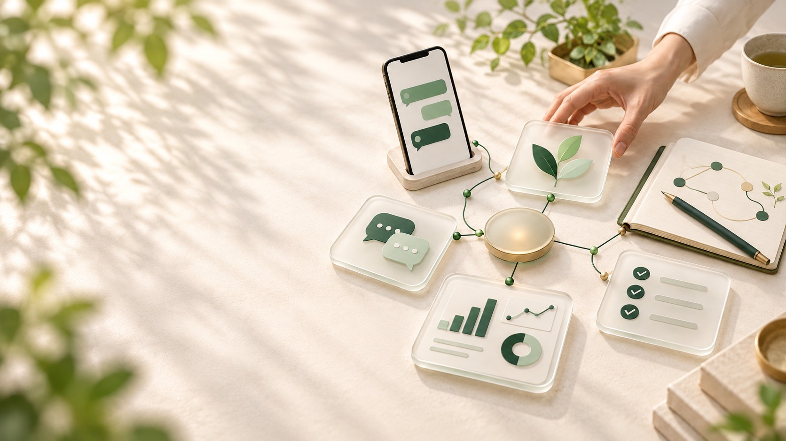

公式LINEの自動応答
友だち追加から面談の予約まで、LINEが自動で進めます。
登録のお礼、特典の資料、日程の案内を、決めた順に自動で送ります。返事が要るものだけを、担当の方に知らせます。
- 実例
- 教育事業のHPと公式LINE（2026年8月に公開）
- 目安（税別）
- 初期10万円〜1万円／月〜

ライフ（阿部）・群馬。相談から運用まで、同じ人が担当します。
作って、終わりにしません。
問い合わせの返事も、毎日の転記も、明日の段取りも。御社の仕事に合わせて、公式LINE・チャットボット・業務システム・AIの作業場を作り、作ったあとも同じ人が直し続けます。
いまの仕事に合わせて、5つの形でお手伝いします。
どれが合うか分からなくても大丈夫です。困っている仕事を1つ教えていただければ、30分の相談で、合う形をお伝えします。画面は、業務システム以外はイメージです（名前・数字は架空）。
友だち追加から面談の予約まで、LINEが自動で進めます。
登録のお礼、特典の資料、日程の案内を、決めた順に自動で送ります。返事が要るものだけを、担当の方に知らせます。
「営業時間は？」「駐車場は？」に、夜中でも答えます。
よく聞かれる質問と答えを一緒に整理して、HPや公式LINEに置きます。答えられない質問は、人に回します。
Excelと手作業の業務を、御社専用のシステムにします。
項目はいまのExcelのまま、入力する人が迷わない画面にします。会計ソフトの取込ファイルまで出るので、同じ数字を二度入れる仕事がなくなります。
実際の画面です。架空の会社とダミーデータで動かしています。音声なし・約30秒
朝には、今日やる3件が届いています。
やることと決めたことをAIが読める場所にまとめ、朝に今日の3件を届け、LINEの用件はタスクに入れ、打ち合わせの録音は夜のうちに議事録にします。阿部が自分の仕事で毎日使っている仕組みを、御社の仕事に合わせて作ります。
AIと仕組みのことを、毎月いつでも相談できます。
60分の定例（オンライン）で、AIに任せるもの、仕組みにするもの、人がやるものを一緒に決め、その場で試します。定例のあいだも、チャットで相談できます（返事は翌営業日まで）。最初の3か月のあとは、月ごとに続けます。作るもの（公式LINE・業務システムなど）は、別にお見積りします。
金額は目安です。正式な金額は、30分の相談のあとにお出しします。
業種ごとに、いまの業務に合わせて作りました。
お客様の社名と画面は出せないので、画面のイメージで。いずれも、先に具体的なものを作ってから、運用が始まりました。

| 工事 | 費目 | 金額 |
|---|---|---|
| A邸 改修 | 材料費 | 128,400 |
| A邸 改修 | 外注費 | 260,000 |
| A邸 改修 原価率 | 71.2% |
業務システム
経費を入れると、工事別の原価と会計用ファイルが出る、御社専用のシステム。Excelの工事台帳と集計が一致し、税理士事務所の読込テスト（TKC FX2）を通過して、2026年10月に本番稼働。使いながら出た要望を反映しています。
この仕組みを詳しく読む
公式LINE・HP
HPと公式LINEで、登録から個別面談までが自動で進みます。事業の立ち上げに合わせてHPと公式LINE（登録特典の自動配信・面談への導線）を作り、2026年8月に公開。保守を続けながら、次の仕組みを一緒に設計しています。

チャットボット
決まった問い合わせには、チャットボットが答えます。2026年4月から運用中。受け答えは、要望が出るたびに調整しています。

今週決めたこと
顧問契約・AI秘書の環境
週1回の定例で、AIに任せる仕事を一緒に決めて、作っています。3か月12回のプログラムを終えて、期限なしの継続に。2026年6月から週1回の定例で、AIを使った仕事の進め方を一緒に考え、9月からはAI秘書の環境づくりを進めています。
困っている仕事を1つ教えていただければ、始まります。
資料を揃えてからでなくて大丈夫です。期間と費用は作るものによって変わるので、30分の相談で、その場でお伝えします。
設計から開発、運用までお任せください。

阿部 龍也ライフ・群馬県。AIの仕組みづくりと、業務システムの設計・開発・運用
小学校で10年教えたあと、AIを使った仕組みづくりと業務システムの開発を仕事にしました。ヒアリングした人が設計し、作り、運用も見ます。言ったことが伝わっていない、担当が変わって話が戻る、ということが起きません。
自分の仕事も、AIで回しています。朝には今日やる3件がメールで届き、LINEの用件はタスクに入り、打ち合わせの録音は夜のうちに議事録になります。お客様に作るのは、自分で毎日使って確かめた仕組みです。
建設会社の経理・工事台帳システムは、会計ソフトへの取込みまで税理士法人と一緒に設計しました。
30分で、作るものと費用の目安をお伝えします。
困っている仕事を伺い、その場で「作る」か「既製の道具を組む」か、費用と期間の目安をお伝えします。頼めることごとの目安は、支援内容に載せています。面談はオンライン（Google Meet）を基本に、ご希望があれば伺います。日程の候補は、こちらから3つお出しします。
合わないと判断した場合は、その場でそうお伝えします。売り込みの電話はしません。
お問い合わせ窓口：ライフ（阿部 龍也・群馬県）。設計・開発・運用を同じ人が担当します。